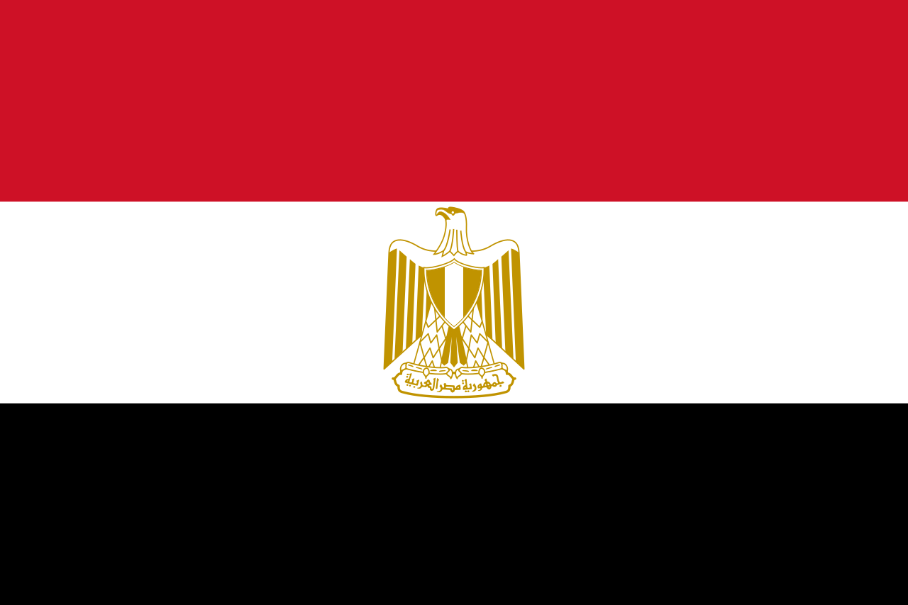

Еги́пет (араб. مصر [Миср/Miṣr] [misˤɾ], масри مصر [Маср/Maṣr] [ˈmɑsˤɾ], копт. Ⲭⲏⲙⲓ [kʰēmi]), официальное название — Ара́бская Респу́блика Еги́пет (араб. جمهورية مصر العربية [Джумхури́ят Миср эль-Араби́я], масри [Гумхури́я Маср иль-Араби́я]), — трансконтинентальное государство, расположенное в Северной Африке и на Ближнем Востоке (Синайский полуостров).
На северо-востоке граничит с Израилем и частично признанным государством Палестиной, на юге — с Суданом, на западе — с Ливией. На севере территория страны омывается водами Средиземного моря, на востоке — Красным морем, при этом оба моря соединены посредством искусственно сооружённого Суэцкого канала.

История
Основные статьи: История Древнего Египта, Хронология Древнего Египта, Доисторический Египет и Список фараонов
Каменный век
Каменные рубила нижнего и среднего палеолита, типичные как для Африки, так и для Евразии
Палеолит
Следов деятельности ископаемых видов, относящихся к роду людей (Homo), на территории Египта обнаружено мало, но современная наука предполагает, что здесь пролегал основной маршрут расселения популяций человека прямоходящего (Homo erectus) из Восточной Африки в Переднюю Азию и далее. Его африканский подвид обозначается как человек работающий (Homo ergaster), но также существует альтернативная антропологическая теория (наиболее современная), согласно которой около 1,8 миллиона лет назад Homo ergaster и его потомки начали расселяться из Африки по всему миру, а Homo erectus выделился только в Восточной Азии. Неизвестны подробности этих миграционных процессов, но, по эволюционным меркам, они проходили довольно быстро — в Азии первые гоминиды появились уже около 1,6 миллиона лет назад. Фактические свидетельства проникновения в долину Нила древних людей эпохи нижнего палеолита связаны с артефактами ашёльской культуры — самые ранние найдены в Бир-Кисейба[27] :6 (более 300 000 лет назад), в Наг-эль-Амра[28] и оазисе Харга[29]:491 (более 400 000 лет назад). Археологические находки этого периода не позволяют выделить какую-либо конкретную характеристику, в качестве культурного пространства именно для территории Египта[30].
Шарм-эль-Шейх – это курортный город в Египте, расположенный между пустыней Синайского полуострова и Красным морем. Шарм-эль-Шейх славится своими тихими песчаными пляжами, чистой водой и коралловыми рифами. Среди туристов популярен залив Наама, вдоль которого тянется окаймленная пальмами набережная с множеством баров и ресторанов. Ещё одно известное место – парк Рас-Мохаммед, который особенно привлекает любителей дайвинга. Здесь можно поплавать рядом с затонувшим кораблем "Тистлегорм" и посмотреть на рифы Шарк и Иоланда.

Хурга́да[2][3] (также Эль-Хардага[3][4], араб. الغردقة — произносится как [el ɣæɾˈdæʔæ] — Эль-Гарда́ка) — город на востоке Египта, расположен в африканской части Египта. Расположен на западном побережье Красного моря, на 400 км юго-восточнее Каира. Является административным центром одной из 27 египетских провинций — мухафазы Красное Море. Численность населения города в 2018 году составляла 400 000 человек. Является туристическим центром на Красном море.
Расстояние от Каира по автодороге составляет 451 км, время в пути — 6 часов. Протяжённость авиатрассы — 400 км, время в пути — 1 час. Город обслуживается международным аэропортом Хургады с регулярными пассажирскими перевозками, соединяющим с Каиром и имеющим прямые рейсы в несколько городов в Европе. Новый терминал был открыт в 2015 году с учётом роста трафика.
Месторасположение: Отель Jaz Mirabel Beach Resort шикарный отель в тосканском стиле и с египетским гостепреимством, расположенный прямо на берегу Красного моря, в заливе Набк, в курортном городе Шарм Эль Шейх. - 11 километров от аэропорта; - 25 километров от Наама Бэй; - 37 километров от Старого города (Old Market). Территория отеля поражает своими масштабами она занимает 120 000 кв.м. с пляжем длинной в 250 метров. Количество номеров: В отеле 645 номеров различных категорий: - 120 Standard rooms; - 60 Superior rooms; - 480 Deluxe Family rooms; - 3 Executive suites.